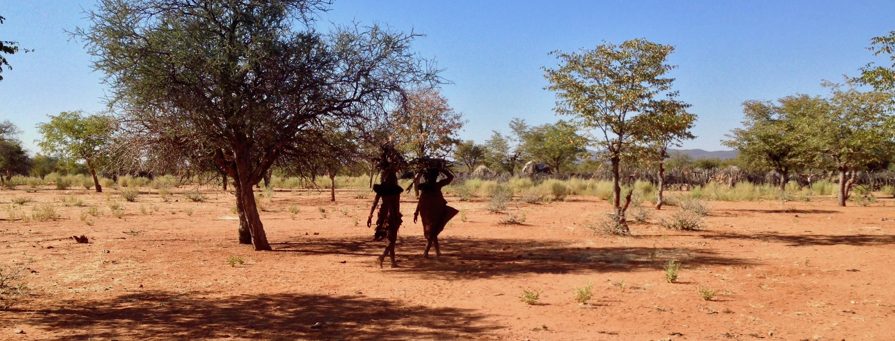

Assistant Professor
Department of Anthropology
UCLA
I am an Assistant Professor in Anthropology at UCLA with a focus on health and reproductive decision-making. I am the co-director of the Kunene Rural Health and Demography Project, based in rural Namibia, where I have worked since 2016. I am currently the PI of a project, jointly funded by the National Science Foundation and the Social Science Research Council’s Mercury Project, to examine individual, economic, and cultural factors that mediate vaccination decisions in Namibia. My work employs a combination of quantitative and qualitative methods, including anthropometrics, demography, endocrinology, actigraphy, surveys and interviews, and dyadic peer ratings. In combining these methods, I aim to develop a more holistic picture of health behavior. In addition to my work in Namibia, I am also a contributor to the NSF-funded ENDOW project on cross-cultural inequality, a collaborator on the Shodagor Longitudinal Health and Demography Project in Bangladesh, and a member of the Population Ecology, Aging and Health Network. I am also a board member of the One Pencil Project, a non-profit focused on health and education in the Kunene.
Prall SP, Scelza BA, Lopes A. 2026. The power of powerful others: Health locus of control and vaccination behavior in rural Namibian pastoralists. BMC Global and Public Health 4:20. pdf | SI | data and code
Prall SP, Lopes A. 2025. Erema po otjindjumba? Highlighting cultural models and knowledge gaps of malaria in rural Namibian pastoralists. Malaria Journal 24:143. pdf
Prall SP, Scelza BA, Davis HE. 2025. The Role of Medical Mistrust in Vaccination Decisions in Rural, Indigenous Namibian Communities. Journal of Racial and Ethnic Health Disparities. pdf | SI | data and code
Prall SP, Lopes A. 2025. “Better to die trying”: Vaccine perceptions and COVID-19 experiences in rural Namibian pastoralists. Vaccine 55(10): 127061. pdf | SI
Prall SP, Scelza BA, Davis HE. 2024. Context dependent preferences in prestige bias learning about vaccination in rural Namibian pastoralists. Social Science & Medicine 362: 117461. pdf | SI | data and code
Prall SP. 2024. Quantifiable cross-cultural research on medical mistrust is necessary for effective and equitable vaccination in low- and middle-income countries. Journal of Epidemiology and Global Health 14:1771-1777. pdf
Prall SP, Scelza BA, Davis HE. 2024. Medical mistrust, discrimination, and healthcare experiences in a rural Namibian community. Global Public Health 19(1): 2346207. pdf | SI | data and code
Other publications can be found here
sprall@ucla.edu